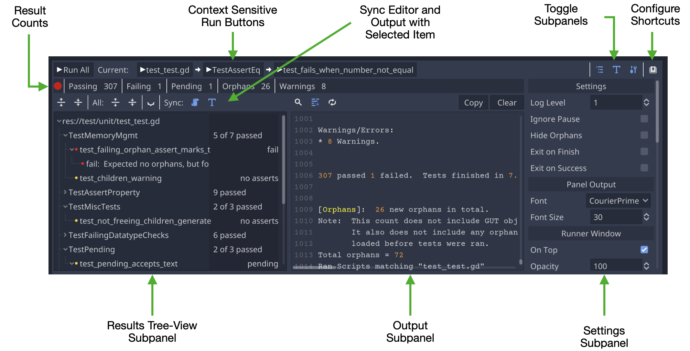
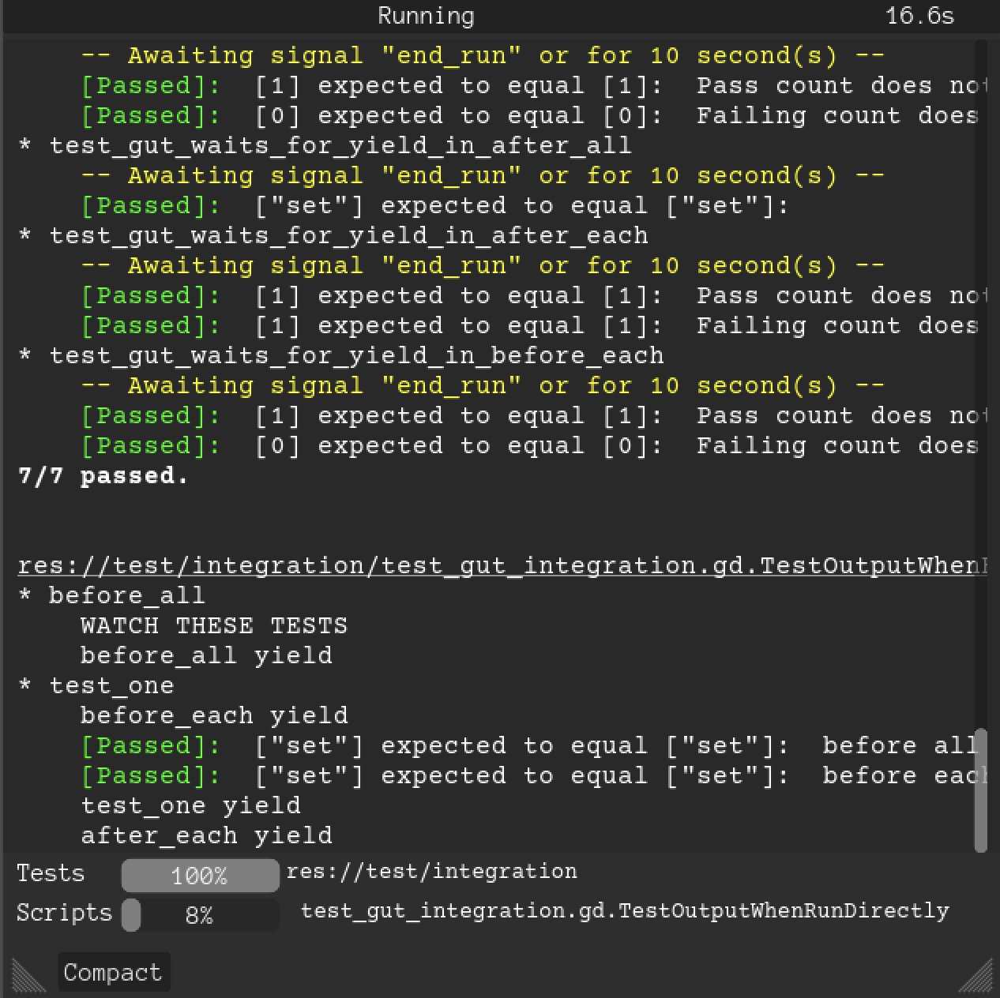
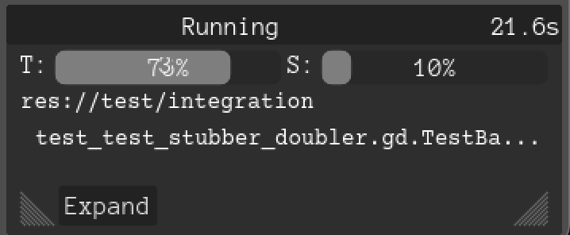
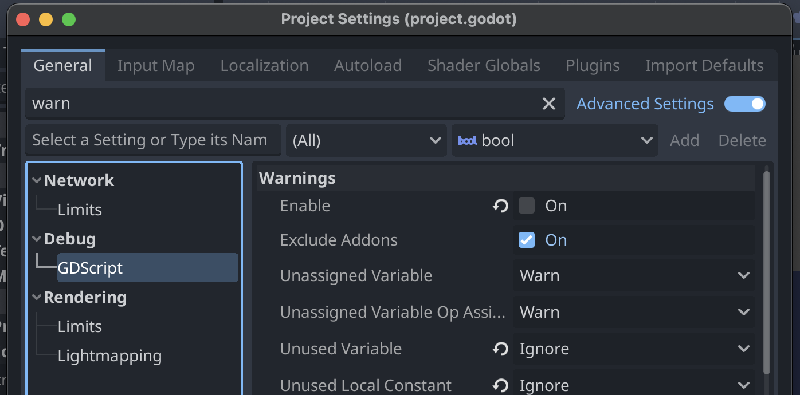

Gut 9.4.0 (Godot 4.4)
GUT (Godot Unit Test) is a utility for writing tests for your Godot Engine game. It allows you to write tests for your gdscripts in gdscript.
Godot 3.x/4.x
GUT 9 requires Godot 4. GUT 7 requires Godot 3.4.
Getting Started
Advanced Testing
Editor GUI
GUT GUI
Normal
Compact
Engine Warnings
There are a fair number of warnings that Godot will show related to GUT. Some of the warnings are valid and are being cleaned up overtime. Most of the warnings are not valid and sometimes relate to generated code. As of 3.2 you can disable warnings for addons, and it recommended you do so.
License
Gut is provided under the MIT license. [The license is distributed with Gut so it is in the addons/gut folder](https://github.com/bitwes/Gut/blob/master/addons/gut/LICENSE.md).